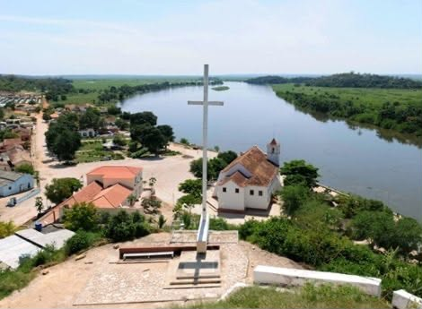
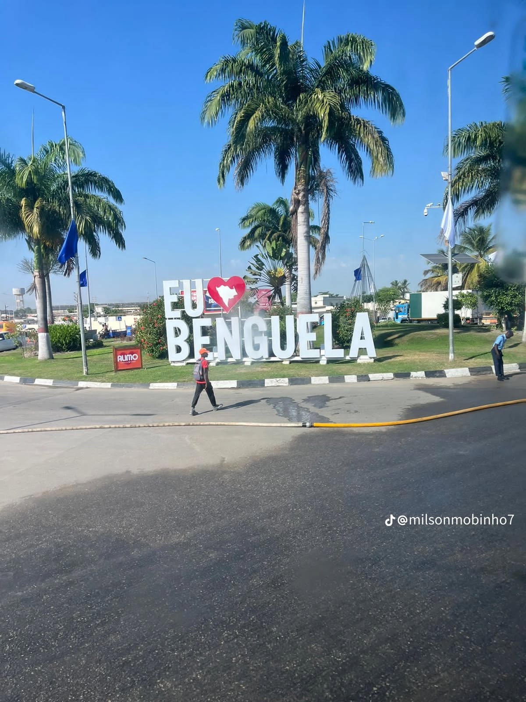
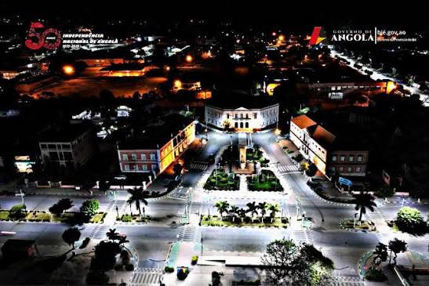
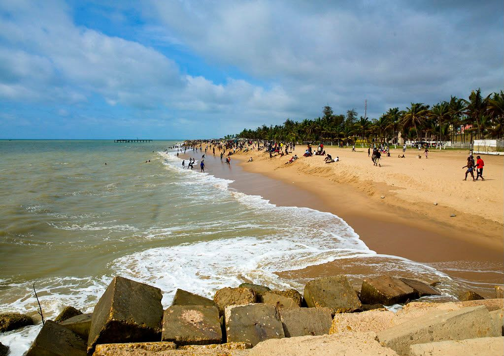
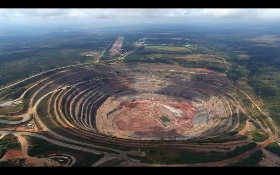
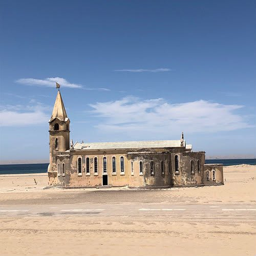
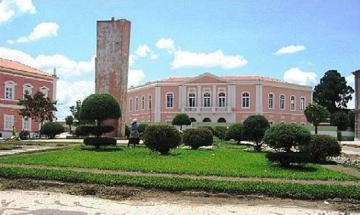
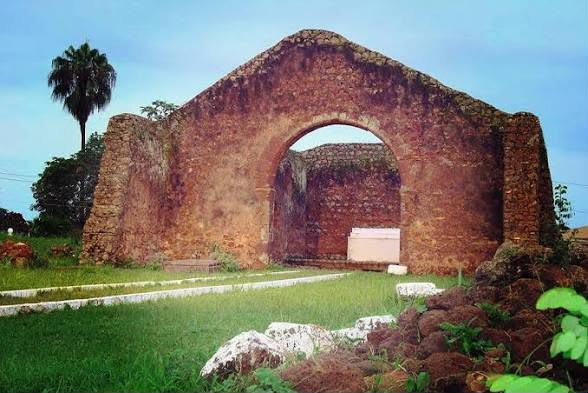

-

Bengo
- Capital: Caxito
- Descrição: Província agrícola do norte de Angola.
- Cidades: Ambriz, Dande
-

Benguela
- Capital: Benguela
- Descrição: Porto do Lobito e praias famosas.
- Cidades: Lobito, Catumbela
-

Bié
- Capital: Kuito
- Descrição: Localizada no planalto central de Angola.
- Cidades:Camacupa, Andulo e Chinguar.
-

Cabinda
- Capital: Cabinda
- Descrição: Província rica em petróleo e separada do restante território nacional.
- Cidades: Cacongo, Buco-Zau e Belize.
-

Cuando
- Capital: Menongue
- Descrição: Destaca-se pela biodiversidade e reservas naturais.
- Cidades: Menongue, Mavinga e Rivungo.
-

Cubango
- Capital: Cuito Cuanavale
- Descrição: Região de grande importância histórica para Angola.
- Cidades: Calai, Dirico e Nancova.
-

Cuanza-norte
- Capital: Ndalatando
- Descrição:Conhecida pelas quedas de água e produção agrícola.
- Cidades: Lucala, Golungo Alto e Cambambe.
-

Cuanza-Sul
- Capital: Sumbe
- Descrição: Possui belas paisagens costeiras e serranas.
- Cidades: Porto Amboim, Waku Kungo e Conda.
-

Cunene
- Capital: Ondjiva
- Descrição: Faz fronteira com a Namíbia e possui forte atividade pecuária.
- Cidades:Xangongo, Cahama e Cuanhama.
-

Huambo
- Capital: Huambo
- Descrição: Um dos maiores centros urbanos do planalto central.
- Cidades: Caála, Ecunha e Longonjo.
-

Huila
- Capital: Lubango
- Descrição: Famosa pela Serra da Leba e pelo clima agradável.
- Cidades: Chibia, Matala e Cacula.
-

Icole e Bengo
- Capital: Catete
- Descrição: Nova província criada durante a reorganização administrativa.
- Cidades:Catete, Bom Jesus e Sequele.
-

Luanda
- Capital: Luanda
- Descrição: Capital da República de Angola e principal centro económico.
- Cidades: Viana, Cacuaco e Belas.
-

Lunda Norte
- Capital: Dundo
- Descrição: Destaca-se pela exploração diamantífera.
- Cidades: Lucapa, Cuango e Cambulo.
-

Lunda Sul
- Capital: Saurimo
- Descrição:Importante região de exploração de diamantes.
- Cidades:Cacolo, Dala e Muconda.
-

Malanje
- Capital: Malanje
- Descrição: Conhecida pelas Pedras Negras de Pungo Andongo.
- Cidades: Calandula, Caculama e Cangandala.
-

Moxico
- Capital: Luena
- Descrição: Uma das maiores províncias do país em extensão territorial.
- Cidades: Luau, Camanongue e Léua.
-

Moxico Leste
- Capital: Cazombo
- Descrição: Nova província localizada no extremo leste de Angola.
- Cidades:Alto Zambeze, Lóvua e Cazombo.
-

Namibe
- Capital: Moçâmedes
- Descrição: Conhecida pelo deserto do Namibe e belas paisagens costeiras.
- Cidades: Tômbwa, Virei e Bibala.
-

Uíge
- Capital: Uíge
- Descrição: Região rica em produção agrícola, especialmente café.
- Cidades:Negage, Maquela do Zombo e Damba.
-

Zaire
- Capital: M'banza Kongo
- Descrição: Berço histórico do antigo Reino do Kongo.
- Cidades: Soyo, Tomboco e Nzeto.